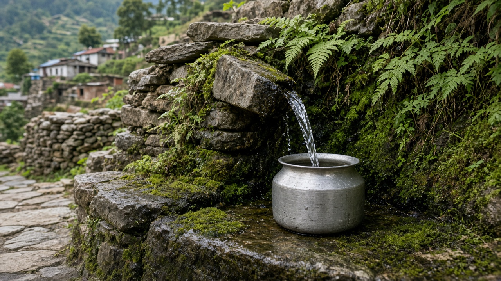
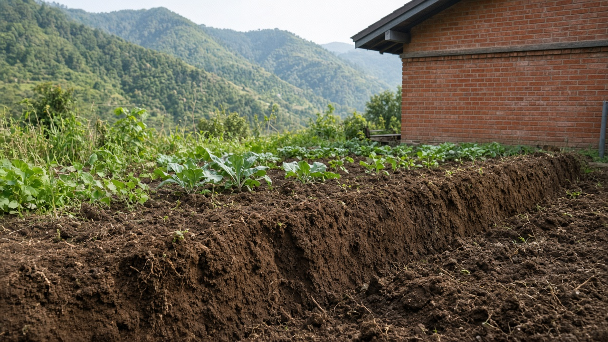
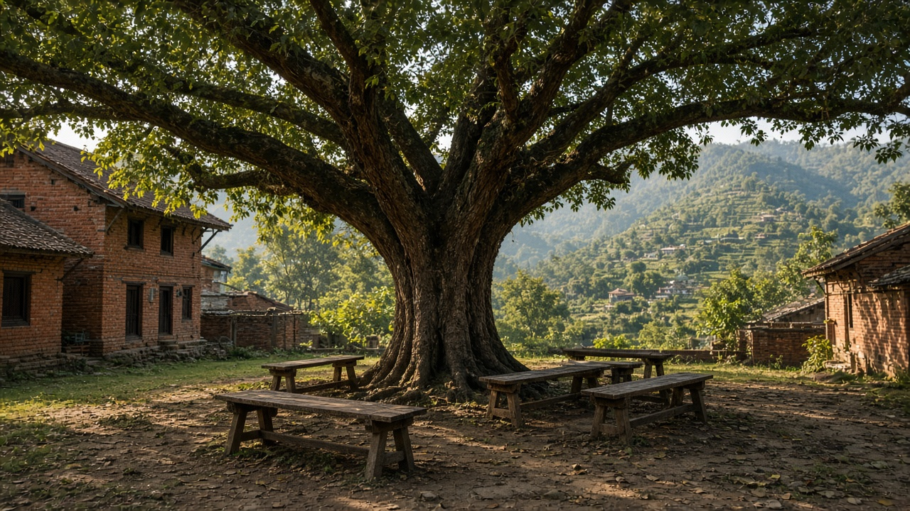

Risk Assessment and Public Health Standards
Published on August 20, 2026

Risk assessment is the structured process of asking what can harm people, how much contact occurs, and how certain the science is. Hazard identification names the agent and its toxic effects. Dose-response analysis estimates how risk rises with intake. Exposure assessment measures or models who meets the agent through water, food, soil, or work. Risk characterization combines those pieces into a statement useful for a drinking-water limit, a soil cleanup goal, or an occupational ceiling. Uncertainty factors protect children and other sensitive groups when data are thin. A number on a regulation is therefore a policy choice informed by science, not a law of nature.
Public health standards translate assessment into enforceable values: guideline values from the World Health Organization (WHO), national drinking-water limits, food residue ceilings, and workplace exposure limits. They should be reviewed when new epidemiology appears, not frozen because industry found them convenient. Transparency matters: communities deserve to know whether a standard used a cancer slope, a threshold, or a political compromise. Screening levels for soil and indoor dust help decide when a site needs cleanup versus when background geology already explains the metal. Cost and feasibility enter management, but they should not silently rewrite the health assessment.
Practice includes stakeholder meetings, independent peer review, and biomonitoring to check whether people actually stay below the intended dose. Low-income neighborhoods often live nearer sources, so an average-risk calculation can hide injustice. Precaution is warranted when effects are irreversible, as with neurodevelopment, even if the last decimal of proof is missing. Students of environmental health should be able to read a standard and ask: whose body, which pathway, what uncertainty, and who was left out. Risk assessment is the grammar of toxicology in public life; standards are the sentences a government is willing to enforce.

जोखिम मूल्याङ्कन भनेको मानिसलाई केले हानि गर्न सक्छ, कति सम्पर्क हुन्छ, र विज्ञान कति निश्चित छ भनी व्यवस्थित सोध्ने प्रक्रिया हो। जोखिम पहिचानले कारक र त्यसका विषालु प्रभाव नाम दिन्छ। मात्रा-प्रतिक्रिया विश्लेषणले सेवनसँग जोखिम कसरी बढ्छ अनुमान गर्छ। सम्पर्क मूल्याङ्कनले पानी, खाना, माटो वा कामबाट को कारक भेट्छ माप्छ वा मोडेल गर्छ। जोखिम चित्रणले ती टुक्रालाई पिउने पानी सीमा, माटो सफाई लक्ष्य वा व्यावसायिक छतका लागि उपयोगी कथनमा जोड्छ। तथ्याङ्क पातलो हुँदा अनिश्चितता गुणकले बालबालिका र अन्य संवेदनशील समूह जोगाउँछन्। नियममा लेखिएको संख्या त्यसैले विज्ञानबाट सूचित नीति छनोट हो, प्रकृति नियम होइन।
सार्वजनिक स्वास्थ्य मापदण्डले मूल्याङ्कनलाई लागू हुने मूल्यमा अनुवाद गर्छन्: विश्व स्वास्थ्य संगठन (WHO) का दिशानिर्देश मूल्य, राष्ट्रिय पिउने पानी सीमा, खाद्य अवशेष छत, र कार्यस्थल सम्पर्क सीमा। नयाँ महामारी विज्ञान आउँदा समीक्षा गर्नुपर्छ, उद्योगलाई सुविधाजनक भएकाले जमाएर होइन। पारदर्शिता महत्त्वपूर्ण छ: समुदायले मापदण्डले क्यान्सर ढलान, सीमा वा राजनीतिक सम्झौता प्रयोग गर्यो कि जान्ने हक राख्छन्। माटो र भित्री धुलोका छनाइ स्तरले स्थल सफाई चाहिन्छ कि पृष्ठभूमि भूगर्भले धातु व्याख्या गर्छ भन्ने निर्णयमा मद्दत गर्छन्। लागत र सम्भाव्यता व्यवस्थापनमा छिर्छन्, तर स्वास्थ्य मूल्याङ्कन चुपचाप फेर्नु हुँदैन।
अभ्यासमा सरोकारवाला बैठक, स्वतन्त्र समकक्षी समीक्षा, र मानिस वास्तवमा लक्षित मात्राभन्दा तल छन् कि जाँच्ने जैव निगरानी पर्छन्। न्यून आय छिमेक प्रायः स्रोत नजिक बस्छन्, त्यसैले औसत जोखिम गणनाले अन्याय लुकाउन सक्छ। स्नायु विकासजस्ता उल्ट्याउन नसकिने प्रभावमा अन्तिम दशमलव प्रमाण नहुँदा पनि सतर्कता जायज छ। वातावरणीय स्वास्थ्यका विद्यार्थीले मापदण्ड पढेर सोध्न सक्नुपर्छ: कसको शरीर, कुन मार्ग, कुन अनिश्चितता, र को छुट्यो। जोखिम मूल्याङ्कन सार्वजनिक जीवनमा विषविज्ञानको व्याकरण हो; मापदण्ड सरकार लागू गर्न तयार वाक्य हुन्।

जोखिम मूल्यांकन वह संरचित प्रक्रिया है जो पूछती है कि लोगों को क्या हानि कर सकता है, कितना संपर्क होता है, और विज्ञान कितना निश्चित है। जोखिम पहचान कारक और उसके विषैले प्रभाव नाम देती है। मात्रा-प्रतिक्रिया विश्लेषण अनुमान लगाता है कि सेवन के साथ जोखिम कैसे बढ़ता है। संपर्क मूल्यांकन मापता या मॉडल करता है कि जल, भोजन, मिट्टी या काम से कौन कारक से मिलता है। जोखिम चित्रण उन टुकड़ों को पेयजल सीमा, मिट्टी सफाई लक्ष्य या व्यावसायिक छत के लिए उपयोगी कथन में जोड़ता है। आँकड़े पतले हों तो अनिश्चितता गुणक बच्चों और अन्य संवेदनशील समूहों की रक्षा करते हैं। नियम पर लिखी संख्या इसलिए विज्ञान से सूचित नीति चयन है, प्रकृति का नियम नहीं।
सार्वजनिक स्वास्थ्य मानक मूल्यांकन को लागू मूल्यों में अनुवाद करते हैं: विश्व स्वास्थ्य संगठन (WHO) के दिशानिर्देश मूल्य, राष्ट्रीय पेयजल सीमा, खाद्य अवशेष छत, और कार्यस्थल संपर्क सीमा। नए महामारी विज्ञान आने पर समीक्षा होनी चाहिए, उद्योग को सुविधाजनक होने से जमा करके नहीं। पारदर्शिता जरूरी है: समुदाय को जानने का हक है कि मानक ने कैंसर ढलान, सीमा या राजनीतिक समझौता उपयोग किया। मिट्टी और भीतरी धूल के छनाई स्तर यह तय करने में मदद करते हैं कि स्थल सफाई चाहिए या पृष्ठभूमि भूगर्भ धातु समझाता है। लागत और व्यवहार्यता प्रबंधन में आते हैं, पर स्वास्थ्य मूल्यांकन चुपचाप नहीं बदलना चाहिए।
अभ्यास में हितधारक बैठक, स्वतंत्र समकक्ष समीक्षा, और यह जाँचने वाली जैव निगरानी शामिल है कि लोग वास्तव में लक्षित मात्रा से नीचे हैं या नहीं। निम्न आय पड़ोस प्रायः स्रोत के पास रहते हैं, इसलिए औसत जोखिम गणना अन्याय छिपा सकती है। तंत्रिका विकास जैसे न उलटे जा सकने वाले प्रभावों में अंतिम दशमलव प्रमाण न होने पर भी सावधानी जायज है। पर्यावरणीय स्वास्थ्य के विद्यार्थियों को मानक पढ़कर पूछ सकना चाहिए: किसका शरीर, कौन सा मार्ग, कौन सी अनिश्चितता, और कौन छूटा। जोखिम मूल्यांकन सार्वजनिक जीवन में विषविज्ञान की व्याकरण है; मानक वे वाक्य हैं जिन्हें सरकार लागू करने को तैयार है।